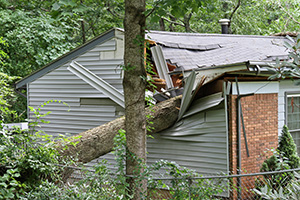

Part One
It can be difficult to know when trimming is the right job and when full tree removal is necessary. As a professional tree company in Forked River, we can help you determine what your trees need and when. In addition to that, we always recommend you hire a professional for any and all tree services you need performed for a variety of reasons. Just because a tree is overgrown doesn’t always mean the entire tree has to be removed. Alternatively, healthy, mature trees sometimes need to be taken out due to their location. No matter what you need, contact us anytime to evaluate the health and safety of your trees and provide you with a free estimate of the work that needs to be done.
Location, Location, Location

Most often, homeowners do not get to choose where trees are planted. Most trees found on residential properties have been there for years or even decades. The location chosen may have seemed ideal originally. However, typically, the full size of the tree is not taken into account. This means that as trees grow wider and taller, they end up encroaching on areas they do not belong. A tree might need to be removed if:
- The tree is causing issues with neighbors. Neighbor relationships can become stressed for many reasons. A messy tree that drops branches and limbs onto the property next door is a common cause of arguments along property lines.
- The tree is too close to a structure. This can be a house, a shed, or even a fence. Falling limbs can cause severe damage like holes in your roof or worse. Plus, it can be very costly to clean-up after and repair all the destruction.
- The tree is inhibiting the growth of your landscape. Whether this be other trees, gardens, or your lawn, many trees planted in the wrong location can hinder the healthy growth of other plants and trees.
- The tree is growing too close to power lines. If branches of your trees are encroaching on power lines, never ever attempt to rectify the problem on your own. Call us, your favorite tree company in Forked River, for trimming and removal services.
- The tree is not an appropriate species for where it was planted. Some people want what they want no matter if it’s right or wrong. There are many negative side-effects of planting non-native species including impacting beneficial insects, animals, and taxing the health of native trees.
Call Ben Bivins Tree Experts, Your Local Tree Company in Forked River
If you take nothing else away from this article, let it be this: never attempt to remove a tree on your own. Always hire a licensed and insured professional to perform tree removal. For one, it’s a dangerous activity that requires the appropriate equipment and safety measures to complete correctly. You can seriously injure yourself and others as well as destroy buildings if you try it on your own. Second, we’ll clean everything up when we’re done. There won’t be any mess for you to deal with at the end. Lastly, even in the best-case scenarios, things can go wrong. When you hire an insured company, all risks are kept to a minimum, but if something does go wrong, we’re responsible for the damage, not you. Keep your relationship with your neighbors on good-terms by always hiring an experienced, professional tree company in Forked River like Ben Bivins Tree Experts.
Be sure to come back next month to read part two and learn how we can help you decide whether to trim or to remove your tree!